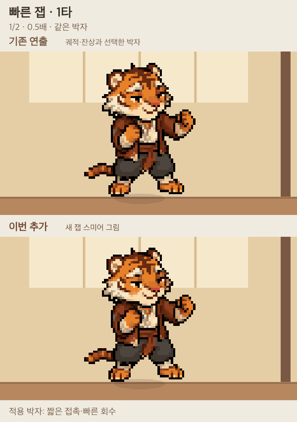
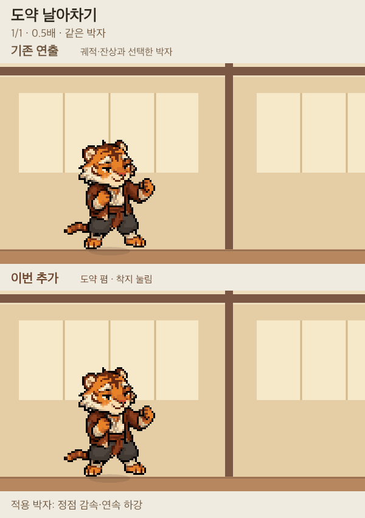
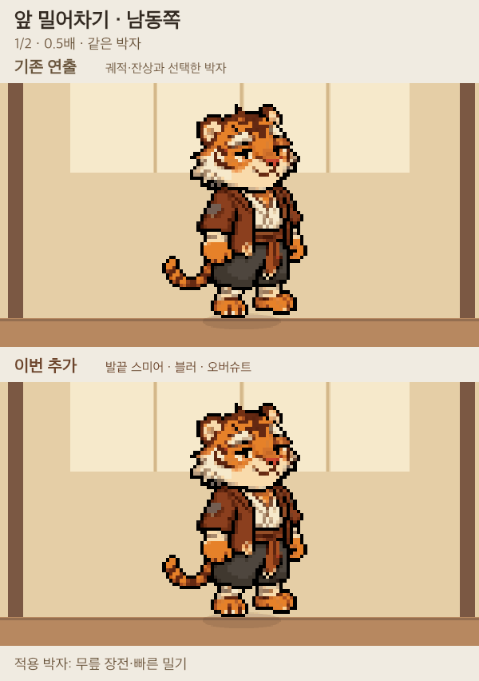
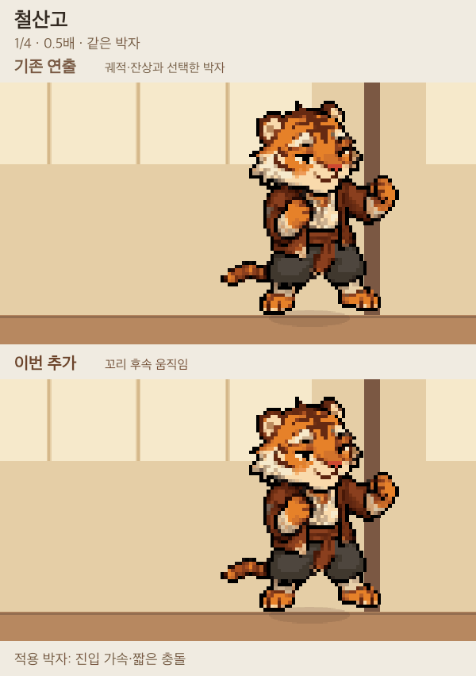
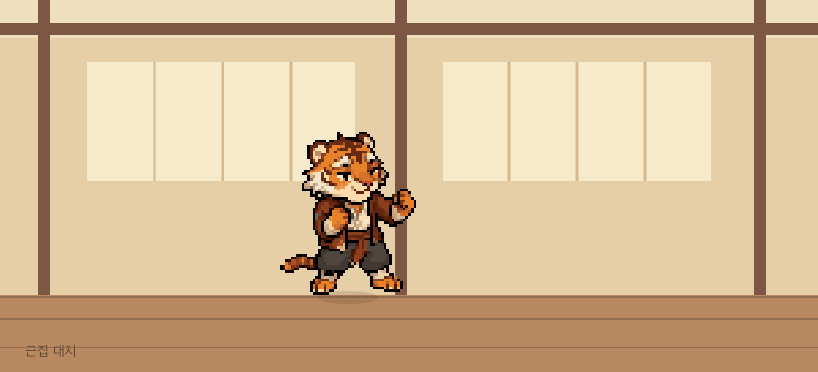
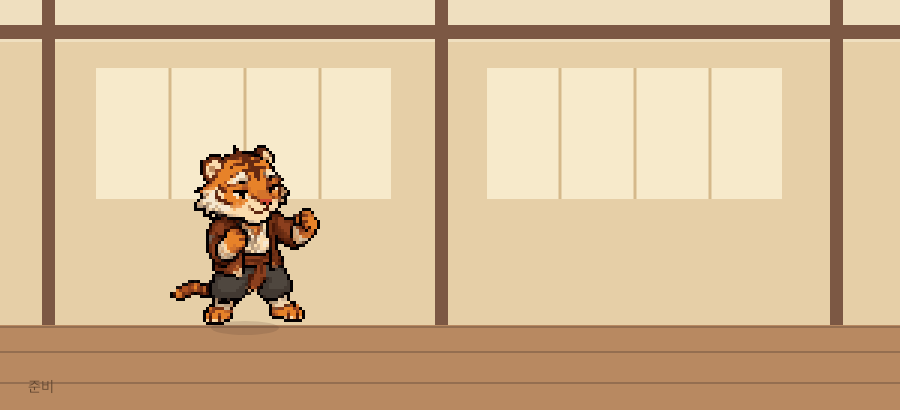
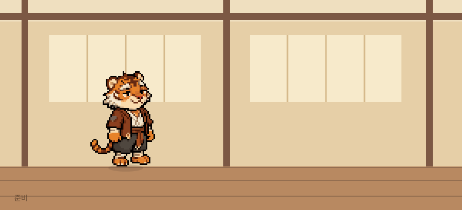
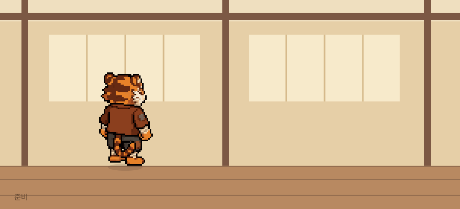
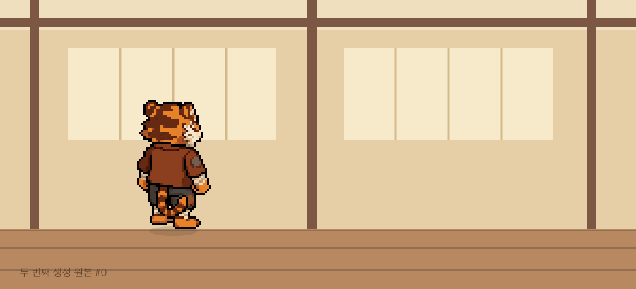

새 잽 스미어 그림


0.5배 · 같은 박자 · 원본 그림/부위 자료 비교아타호 v2 · 추가 공격 검토
기존 원본과 추가 그림·부위 연출의 비교 GIF입니다. 준비·접촉·회수와 외형을 비교해 주세요.
프로젝트의 재생·그리기 코드로 별도 렌더링한 자료이며 실제 브라우저 촬영이 아닙니다. 새 그림의 최종 채택은 사용자 검토를 따릅니다.
조합실에서 자세별로 보기위는 기존 궤적·잔상, 아래는 이번 추가 그림·부위 효과입니다. 같은 박자를 0.5배로 재생합니다.

0.5배 · 같은 박자 · 원본 그림/부위 자료 비교
0.5배 · 같은 박자 · 원본 그림/부위 자료 비교
0.5배 · 같은 박자 · 원본 그림/부위 자료 비교
0.5배 · 같은 박자 · 원본 그림/부위 자료 비교준비·접촉·회수와 외형 전환을 비교해 주세요.
0.365초 · 1타 · 반복 간격 포함준비·접촉·회수와 외형 전환을 비교해 주세요.
0.600초 · 2타 · 반복 간격 포함
준비·접촉·회수와 외형 전환을 비교해 주세요.
1.090초 · 2타 · 반복 간격 포함준비·접촉·회수와 외형 전환을 비교해 주세요.
0.805초 · 1타 · 반복 간격 포함
준비·접촉·회수와 외형 전환을 비교해 주세요.
1.815초 · 3타 · 반복 간격 포함지지발은 고정되지만 원투와 킥의 전환에서 상체가 약 18~20px 이동한다. 연결 자세가 부족하다.
1.035초 · 2타 · 반복 간격 포함
준비·접촉·회수와 외형 전환을 비교해 주세요.
0.755초 · 1타 · 반복 간격 포함
준비·접촉·회수와 외형 전환을 비교해 주세요.
0.755초 · 1타 · 반복 간격 포함첫 결과는 팔꿈치 돌출이 약하다. 두 번째 결과는 북동쪽이 앞모습으로 돌아가며 남동쪽 팔 윤곽에 큰 띠 모양이 생겼다. 두 결과 모두 최종 채택 전이다.
0.730초 · 1타 · 반복 간격 포함첫 결과는 팔꿈치 돌출이 약하다. 두 번째 결과는 북동쪽이 앞모습으로 돌아가며 남동쪽 팔 윤곽에 큰 띠 모양이 생겼다. 두 결과 모두 최종 채택 전이다.
0.730초 · 1타 · 반복 간격 포함남동쪽 두 손이 겹친다. 같은 구간의 역순으로 회수를 구성했다.
0.840초 · 1타 · 반복 간격 포함남동쪽 두 손이 겹친다. 같은 구간의 역순으로 회수를 구성했다.
0.840초 · 1타 · 반복 간격 포함공격 발이 몸 밖에 보이지만 낮추는 폭이 작고 두 방향 모두 화면 왼쪽으로 쓴다.
0.795초 · 1타 · 반복 간격 포함공격 발이 몸 밖에 보이지만 낮추는 폭이 작고 두 방향 모두 화면 왼쪽으로 쓴다.
0.795초 · 1타 · 반복 간격 포함
두 번째 생성 원본입니다. 팔 윤곽과 몸 방향 오류가 있어 비교용으로 보존합니다.
1.040초 · 0타 · 반복 간격 포함두 번째 생성 원본입니다. 팔 윤곽과 몸 방향 오류가 있어 비교용으로 보존합니다.
1.040초 · 0타 · 반복 간격 포함팔이 이동 경로처럼 이어지는 중간 자세와 타격 뒤 회수를 비교해 주세요.